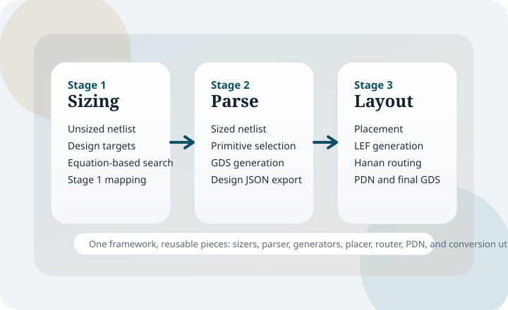

COmPOSER
COmPOSER is a performance-oriented RF/mm-wave design automation framework that connects hybrid analytical sizing, primitive generation, placement, routing, and final layout assembly into one workflow.
This website has been rebuilt as a fully static site with real HTML pages and relative links, so it works directly from the docs/ folder and on GitHub Pages without any Jekyll dependency.
Paper-aligned framing
The site now follows the attached paper's framing of COmPOSER as an end-to-end RF/mm-wave synthesis flow, not just a repository of scripts.
It emphasizes layout-aware passive modeling, MILP-based placement, A*-based routing, PDN integration, and the LNA/PA evaluation story from the paper.

Main Stages
Stage 1
Hybrid analytical sizing computes active and passive targets from user specifications.
Stage 2
Primitive block generation turns sized elements into layout-ready GDS building blocks.
Stage 3
Layout synthesis performs placement, routing-input generation, detailed routing, and PDN creation.
Stage 4
The paper closes the loop with post-layout verification and iterative refinement.
Start Here
- Paper Overview explains how the public repo maps to the manuscript.
- Installation covers Python packages, Gurobi, router build, and the mock PDK.
- Quickstart shows the fastest way to run one of the LNA or PA examples.
- Configuration explains the main
config.jsoninterface. - Examples explains what each example file and generated directory means.
Important Notes
The CSV files in DATASETS/ are reference-format datasets. Users should generate their own datasets with the same columns and units expected by the scripts.
TheMODELS/directory is intended to hold trained.pklfiles, but those artifacts are not committed in the repo.
The mock PDK and fixed primitive GDS files are useful for validating the public flow, but they are placeholders rather than production technology assets.